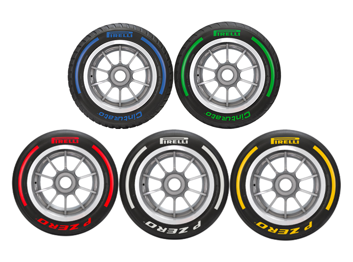
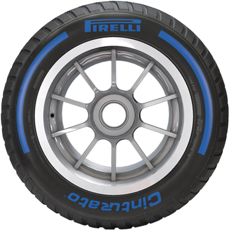
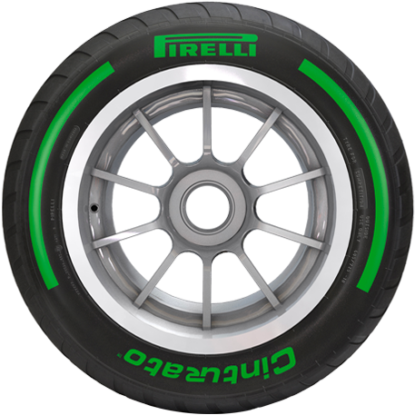
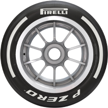

Different types of Tyres
The new 18-inch tires were designed from the ground-up, with every element of the tire drawn from a clean sheet of paper: from the
profile, to the structure, to the compounds. The design process took in more than 10,000 hours of indoor testing, more than 5000 hours
of simulation, and more than 70 prototypes developed virtually, to eventually create 30 different specifications that were tested by
nearly all the teams over more than 20,000 kilometres. The role of the drivers was crucial, with each of them contributing to the
development at various points and helping Pirelli arrive at the definitive specifications thanks to their feedback.


Wet Tyres
The full wet tires are the most effective for heavy rain, capable of
dispersing impressive quantities of water. But if it rains heavily, visibility rather than grip causes issues, leading to race stoppages on occasions.
The profile delivers increased resistance to aquaplaning, which gives the tyre more grip in heavy rain. Wet tyres, on the other hand, have a ‘grooved’
tread. The purpose of the grooves is to break the surface tension of any water that is on the road and to displace that water. Rain tyres are cut or
moulded with patterned grooves or tread in them. This allows the tyre to quickly displace the water between the ground and the rubber on the tyre. If
this water is not displaced, the car will experience an effect known as hydroplaning as the rubber will not be in contact with the ground.
They can displace up to 65 litres of water per second.
Hide This
Go to the Top

Intermediate Tyres
The intermediates are the most versatile of the rain tires. They can be used on
a wet track with no standing water, as well as a drying surface. The compound has been designed to have a wide working range, guaranteeing a wide
crossover window both with the slicks and the full wets. The intermediate tyre is suitable for when conditions are changeable with at least some
moisture on track whilst the extremes are suited for heavy rain. They can displace up to 30 litres of water per second. These tires,
therefore, can a lot of the time last up to 50% of a race distance, so any race ran completely in conditions for intermediate tires
would likely end up a one-stop race. The intermediate tires also don’t wear down as much.
Hide This
Go to the Top

Soft Tyres
The red marked tyre refers to the softest available( also known as Softs or Soft Tyres).A softer tyre provides you with more grip at the expense
of compromised durability. Beacause of high grip they are the fastest but at the same time after a few laps they start degrading and lose speed
and grip.These represent the fastest rubber.
Hide This
Go to the Top

Medium Tyres
This is the compromise compound. It’s usually slower than the softs but faster than hards. And it should last longer than the softs, but not as
long as hards. A medium tyre has less grip than softs but more than hards. They more durable than softs but less than hards(Whites).
They work good on all the street circuits. Which is the reason they are called Medium Tyres or Mediums.
Hide This
Go to the Top

Hard Tyres
These provide the least grip, but are supposed to remain in working order the longest. Sometimes they take longer than softs and mediums to
get to the temperature. They have the least amount of grip but the are the most durable. They can be used for 30 - 50 laps. They are the best
on circuits where tyre-wear is demanding.
Hide This
Go to the Top
Rules & Regulations:
Formula 1 has contracted a single supplier of tyres since the 2007 season. The supplier (Pirelli since 2011) supplies 5 specifications
of slick dry-weather tyres (C1, C2, C3, C4, C5), of which 3 compounds are provided at each race (as soft, medium and hard). From 2011
to 2015, 2 types of dry tyres were provided at each race weekend, known as the Prime and the Option. Teams are supplied with more sets
of Prime tyres than Option tyres for use throughout the weekend. The Prime tyre is usually harder and therefore more durable than the
Option tyre, while the Option tyre provides more grip and therefore allows faster lap times when the tyres are fresh. At some events
the selection is reversed, with the Option tyre being harder than the Prime. The combination of longer lasting and faster tyres adds
an element to each car's race strategy. Additionally, 2 wet-weather compounds are provided by the supplier: intermediate and full wet.
From 2016 onward, 3 dry tyre compounds are brought to a race weekend. Since 2019, regardless of tyre compound, one tyre is designated
as soft, one as medium, and one as hard. One set of the softest tyres is set aside for Q3 and two sets of the middle and the hardest
tyres are kept for the race. Drivers select 10 sets of tyres for a race weekend. Each compound is differentiated by a colour-coded
band painted around the tyre's sidewall and including the supplier's logo: red for soft, yellow for medium, white for hard, green for
intermediate, and blue for full wet.
During the Race Weekend
Competitors are allowed only a limited number of tyre sets during a race event: 13 dry, 4 intermediate, 3 wet. Each tyre must be
marked with a unique identifier for tracking and scrutinising during a race event. During the practice sessions drivers are limited
to the use of 3 sets of dry tyres, and certain sets must be returned to the supplier before the second and third sessions. From 2014
to 2021, if qualifying and starting the race on dry tyres, drivers who completed a lap during the third period of qualifying (the top
ten) were required to start the race on the tyre set with which they recorded their fastest time during the second period. Any cars
that qualified outside the top ten may have started the race on any remaining set of tyres. This rule was removed prior to the 2022
season.[18] Cars must race on any 2 dry compounds during a race unless intermediate or wet tyres have been used by that car in that
race.
Prior to qualifying, wet and intermediate tyres may only be used if the track is judged wet by the race director. Starting the race
behind the safety car due to heavy rain requires cars to be fitted with wet tyres until they make a pit stop.
Heaters may be applied only to the outside of tyres.
Go to the Top